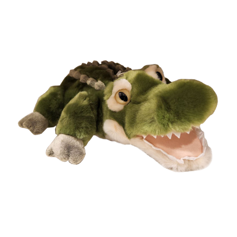
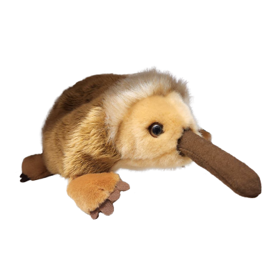
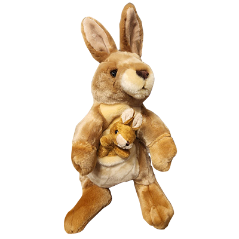
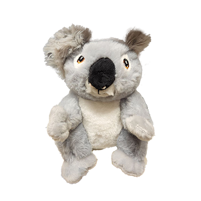
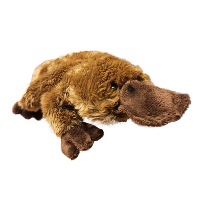
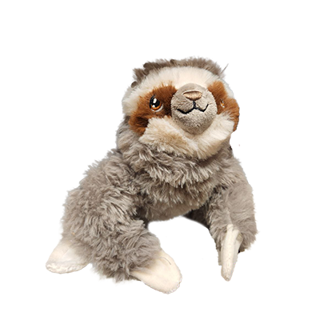
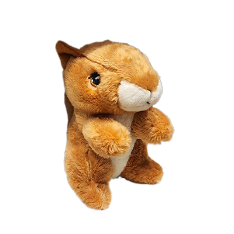
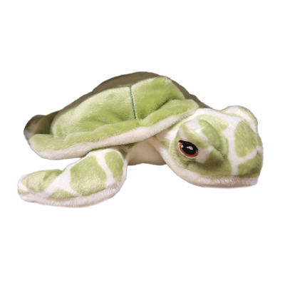

Meet the friends

Crocodile
Spotted something in the water? Well it’s probably your friendly neighbourhood croc.
Meet Rex, the Crocodile! While others are known for their sharp teeth, this species of crocodile plushies are passive around humans and love head pats.
They live close to bodies of water such as lakes and rivers, so you’re likely to come across loads of them.
Don’t worry about petting them either, as we can assure you that no fingers will be lost in the process!

Echidna
Let's get straight to the ”point” here. Meet Elton, the Echidna!
Many adventurers mistake this adorable plush for a porcupine, due to their barbless quills.
They can be easily identified with their long beak, similar to Pinocchio.
Echidnas are solitary creatures, so it might be tricky to spot one of these plushies in the wild.
Fun fact: Although these plushies are classified as mammals, female Echidnas actually lay eggs!

Kangaroo
What's that hopping over there in the distance? It’s Stella the Kangaroo!
These plushies pack quite a punch too as kangaroos make great boxers, crikey!
Not only are they exceptionally tall, but their long tails give them the ability to make huge leaps into the air.
Female kangaroos also have a pouch on their belly to cradle their joeys. Here we have a picture of Stella with her newborn son, Ricky!

Koala
Ever wondered why Koalas are so popular? It's because they are coo-a-la! (cool) Anyway jokes aside, meet Kooky the Koala!
These plushies are really calm and relaxed as they can be found sitting on trees while chewing on eucalyptus leaves.
Koala plushies are nocturnal, and mostly active at night.
These cute little creatures are best known for sleeping all day…no wonder they look so cosy up there!

Platypus
Is that a four-legged duck? No, it's a platypus! Meet Penny the Platypus!
These plushies make great olympic swimmers thanks to their waterproof fur and webbed feet which help them glide through the water.
Similar to the echidna, female platypuses lay eggs as well even though they are part of the mammal plush species!
Platypuses can be found in rivers and lakes as they live together in harmony with the crocs.

Sloth
If you're wondering if time slowed down all of a sudden, chances are you’re just looking at a sloth move. Meet Simon the Sloth!
These plushies are the slowest creatures on the island and are usually spotted hanging on tree branches.
Similar to the koalas, these creatures spend all day sleeping as well and barely move even when they are awake.
Best to think twice before hiring a sloth for a job, otherwise they would never make it on time!

Squirrel
Things are about to go nuts! Meet Ben the Squirrel!
These plushies are the smallest of the bunch, but they are known for their big bushy tails.
Squirrels can be found scurrying across treetops at lightning speeds while carrying acorns into their burrows.
They are always friendly towards humans and it's really easy to catch a glimpse of them around the island as they can be found everywhere!

Turtle
And as usual, at last we have the turtles. Meet Timmy the Turtle!
Turtle plushies can be found commonly on the beaches of Plush Island as their nests are located at the sea shore.
While turtles may not be the fastest creatures on land, they are great swimmers as they gracefully glide along the water in the surrounding ocean.
Unlike other parts of the world, turtles here are well protected in a safe environment where they thrive with their other fuzzy friends.
Events
Take a trip to Plush Island and meet the friends of Cosy Cove at the upcoming
safari adventure that will take place on the Cosy Cove safari trail this summer.
Join us on this one of a kind adventure to meet these cuddly creatures in the wild!
About the founder
Hey everyone, my name is Thanish and welcome to my collection of plush creatures which I discovered and
documented on my journey in Plush Island (or more commonly known as shelves at various toy stores).
I hope my readers are fascinated about these wonderful creatures and learn something new about them.